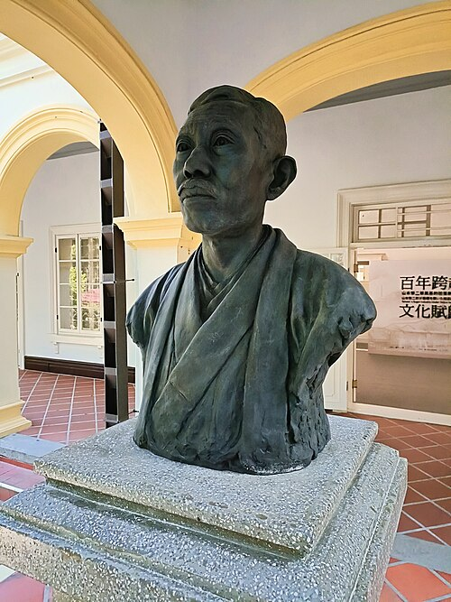
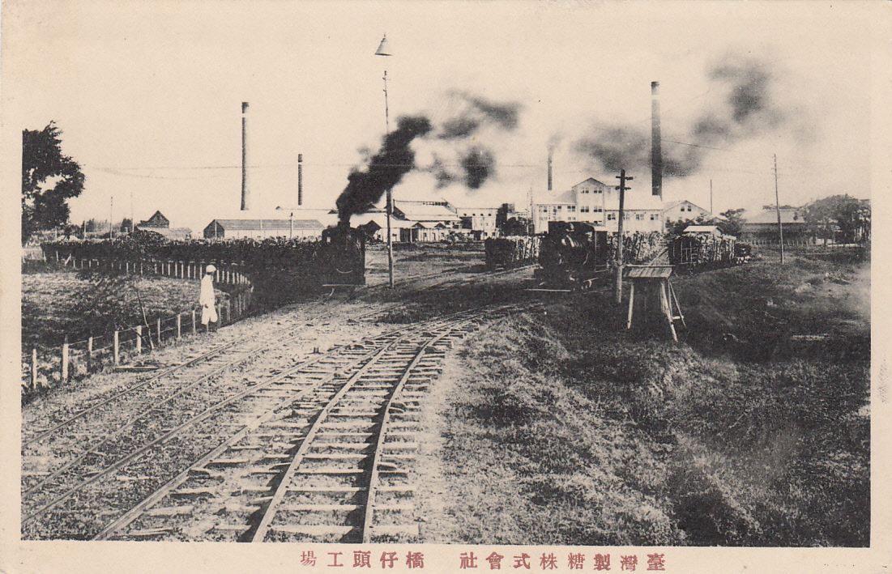
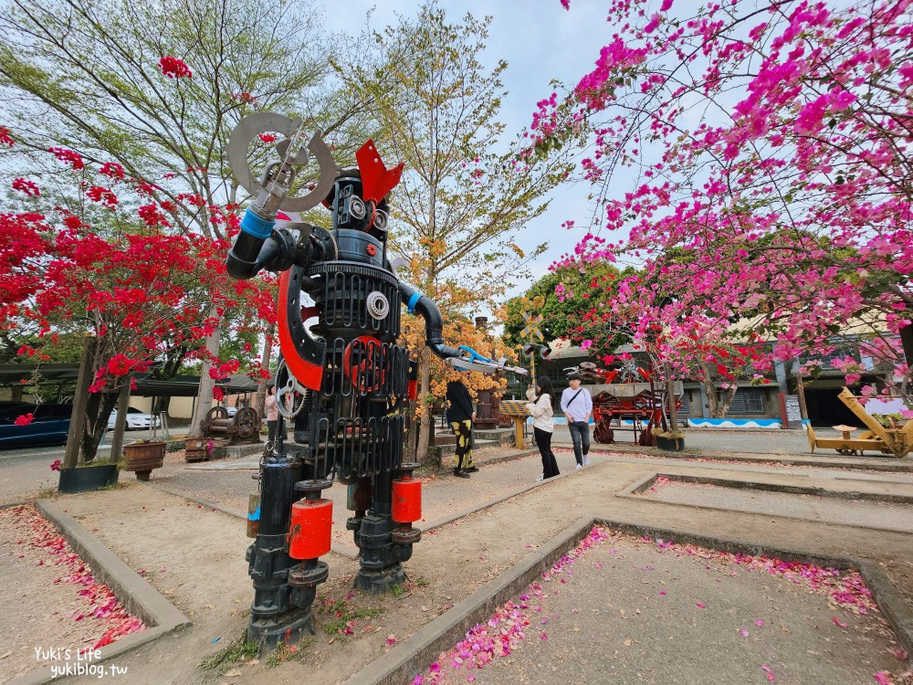

歷史發展分期與時空脈絡
明鄭以前
在漢人尚未進入前，橋頭地區為平埔族馬卡道族的生活活動範圍[cite: 2]。當時設有「哆吧思戎土社」部落，這個名字可能即為今日「仕隆」、「中崎」一帶的前身[cite: 2]。
清領時期
漢人入墾土地需求增加，開墾活動走向有組織化的「墾號」與「埤圳組織」建置[cite: 2]。在中崎溪築灞開渠引溪水灌溉水田（後壁田），為便利交通在縱貫大路上建立小橋，稱「允龜橋」，隨商旅增加形成「店仔街」，最終命名為「橋仔頭」[cite: 2]。
日治時期（糖業黃金期）
台灣總督府積極發展糖業，推動現代化新式製糖工場進駐[cite: 2]。1901年三井集團於現今高雄橋頭成立了台灣第一家新式機械製糖工場——台灣製糖株式會社橋仔頭工場[cite: 2]。隨產業發達引來大批仕紳階層，促使橋頭街執行台灣歷史上第一條現代概念的「街道改正」[cite: 2]。

圖二：設立臺灣第一座現代化糖廠的關鍵人物山本悌二郎銅像 / 來源：維基百科

圖三：日治時期臺灣製糖株式會社橋仔頭工場歷史原貌 / 來源：國家圖書館臺灣記憶資源網
戰後初期
國民政府接收日治時期糖業資產並成立「台糖公司」[cite: 2]。民國36年（1947年），橋頭正式從岡山分出，獨立成立橋頭鄉，依傳統聚落地緣劃分為17個村[cite: 2]。此時期台糖冰品（紅豆酵母冰）逐漸成為深入地方的庶民日常記憶與文化發源[cite: 2]。

圖四：更名為「台灣糖業公司高雄廠」之正門現貌 / 來源：維基百科
現代轉型與文化保存
隨著全球糖價激烈競爭，橋頭糖廠於1999年正式終止製糖作業[cite: 2]。廠區功能在地方學界、文化工作者倡議下，於2003年起登錄為歷史建築群，逐步活化為「橋頭糖廠文化園區」，引入文化保存、鐵道休閒與地方文創（如太成肉包糖廠店）[cite: 2]。

圖五：停產後完整保留之壓榨工廠內部工業遺產地景 / 來源：維基百科

圖六：糖廠舊鐵件再利用改造之現代文創裝置藝術 / 來源：維基百科